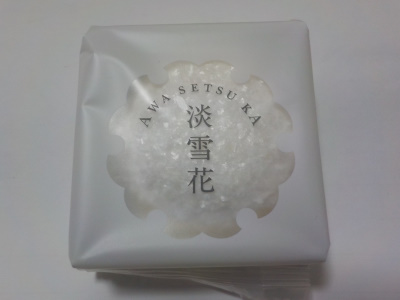

藤い屋の淡雪花は美味しい。
2020/12/18

見た目が綺麗なお菓子です。
丸いので、化粧石鹸みたい。
マシュマロのようにふわふわした何かに（何だろう？）レモン味の寒天をはさんだお菓子です。
さわやかな甘さでとっても美味しい。また買いたいです。
広島県廿日市市宮島町1129
2020/12/18

見た目が綺麗なお菓子です。
丸いので、化粧石鹸みたい。
マシュマロのようにふわふわした何かに（何だろう？）レモン味の寒天をはさんだお菓子です。
さわやかな甘さでとっても美味しい。また買いたいです。
有名なお店みたい。